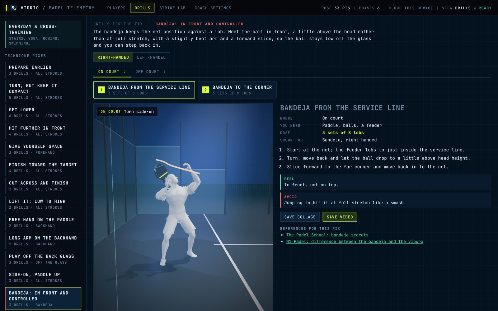
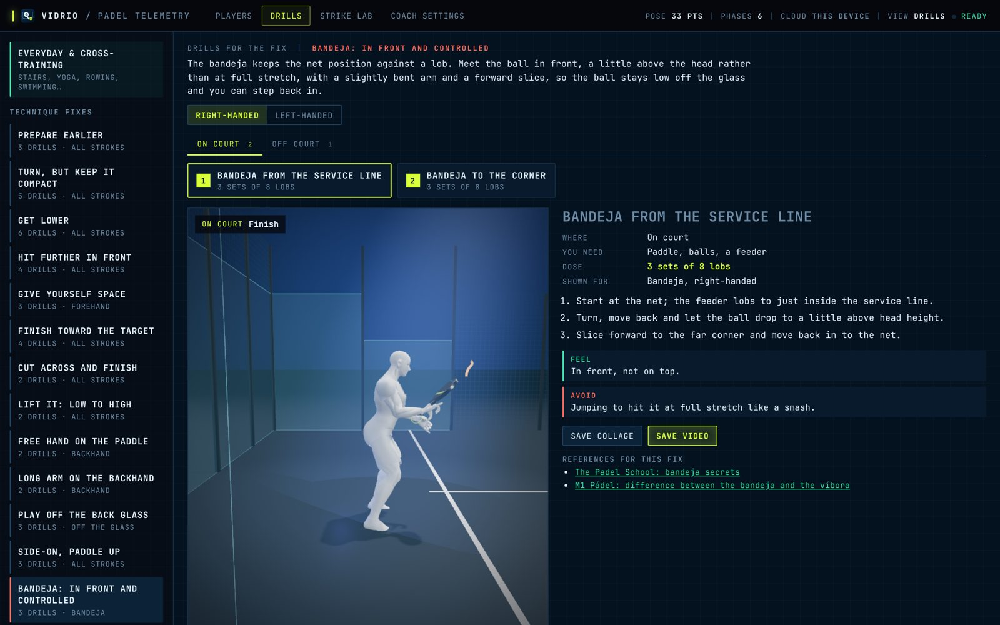
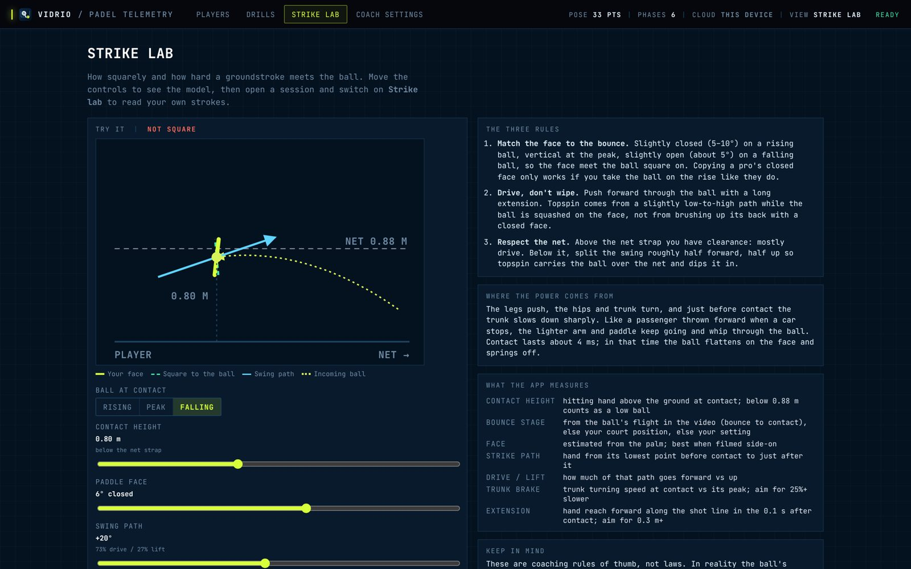

Vidrio tracks the body in a phone video of your padel, finds every shot, names it (bandeja, víbora, smash, serve, volley, off the glass) and tells you the one change that matters, with drills to fix it.

Padel swings are shorter, the ball is slower and half the game happens off the glass. Every rule, phase and drill in Vidrio is set for that.
Each stroke is split into numbered phases (Ready, Turn, Paddle up, Contact, Finish) with the frame and time of each.
Bandeja, víbora and smash are told apart by contact height, arm extension and how far the paddle cuts across the body.
Contact at or below the waist, after a bounce, with the paddle finishing toward the target.
Turn early, let the ball come off the back wall, get low and hit it in front. Vidrio checks each step.
Every target range and callout is editable, so the feedback matches how you coach.
Tap the four corners of the court once and Vidrio calls every bounce against the walls and service boxes.
See your stroke rebuilt as a 3D athlete with a real padel paddle, inside a 10 × 20 m court with glass walls and mesh. Orbit around it, slow it down, and export a vertical reel for your players.


How squarely and how hard the paddle meets the ball: face angle against the bounce, drive against lift, and where the ball lands short of the back glass.